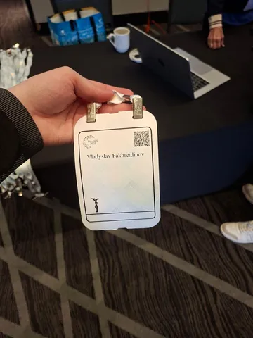
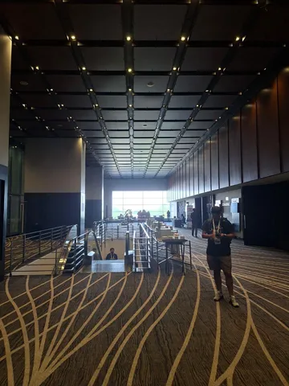
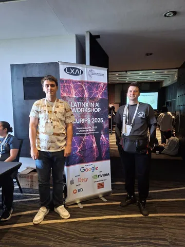
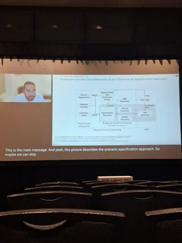
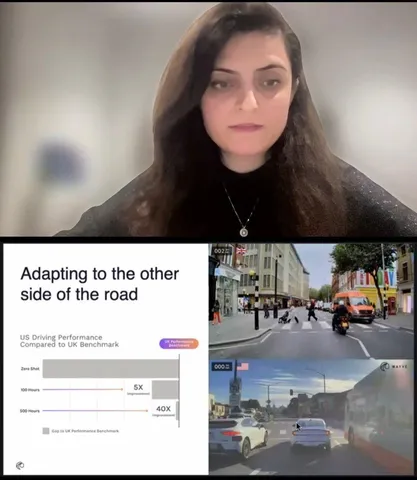
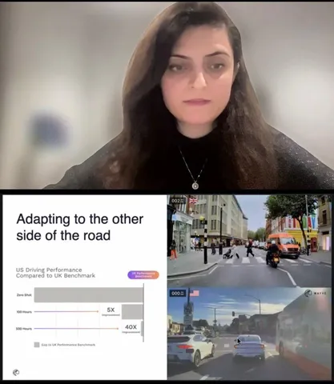
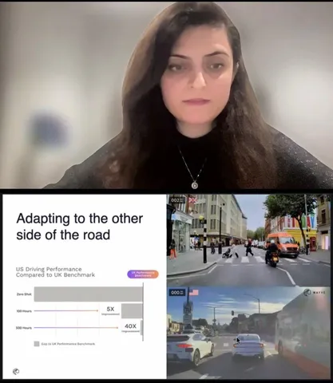

Началась главная ML-конференция — NeurIPS. В этом году она проходит сразу на двух площадках: в американском Сан-Диего и в мексиканском Мехико.
Мы будем рассказывать о том, что происходит в Мексике. Впечатления руководителя группы AI-планирования робота доставки Дмитрия Быкова читайте в ML Underhood. А здесь самым запоминающимся поделился наш коллега Владислав Фахретдинов из команды восприятия робота доставки.
Главный мотив первого дня — безопасность и масштабируемость автономного транспорта. В отличие от ограниченной тестовой среды, в реальном мире, бесконечное количество ситуаций, когда система должна вести себя безопасно по отношению к другим и самой себе. Обсуждали, как эффективно тестировать автономные системы с учётом этого.
Сначала были доклады про построение сценариев и их реализацию. TL;DR: тестировать что-либо на реальных задачах слишком долго и дорого, лучше использовать симуляторы, а потом приближать их данные к реальности с помощью генеративных моделей
Далее был простой, но интересный рассказ Sergey Levine из UC Berkley про историю развития VLA от LLM и VLM до будущего в построении foundation-моделей.
Самую интересную работу, на мой взгляд, привезла команда Wayve, которая делает автономный транспорт.
Во-первых, они показали свою автономную систему. Она обучается end-to-end, на вход принимает сенсоры, на выходе возвращает всё для управления, также есть контур безопасности. Обучив систему на данных и
з UK, ребята проверили её на 500 других городах и показали, что модель стала лучше адаптироваться к дорожным и географическим условиям.
Во-вторых, ребята привезли сразу две своих foundation-модели:
GAIA-2 — модель генерации реального мира, которая на основе начальных данных с камер и условий (положения и поведение агентов и самого транспортного средства, состояние окружения) умеет фотореалистично предсказывать изображения с камер.
Модель состоит из двух частей: токенизатора для перевода видео в латентное пространство и модели мира для генерации будущего латентного состояния мира.
Вторая модель — LINGO-2 — VLA. Она добавила в систему общие человеческие знания и размышления, а также
возможность описывать действия.
Комбинация этих моделей:🔴 E2E — помогает системе быть более устойчивой и лучше обобщаться, но требует много данных.🔴 Модель симуляции мира — позволяет проводить сколь угодно разнообразные тесты и проверять безопасность системы.🔴 VLA — делает систему еще более устойчивой и обобщаемой.
У себя на сайте ребята пишут про L4-уровень автономности, также там много интересных видео. И хотя они ещё не вышли на уровень массовой масштабируемости, в их машине вполне ездит Huang — думаю, можно считать их разработки будущим отрасли.
#YaNeurIPS25
Выбрал самое интересное из событий первого дня
404 driver not found
 

